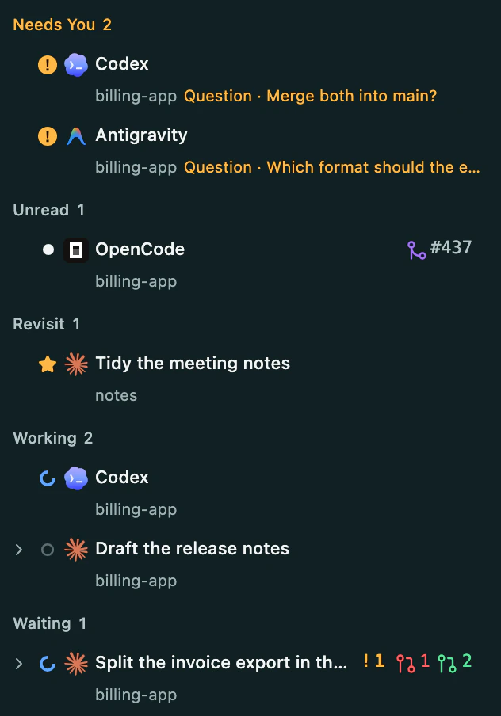
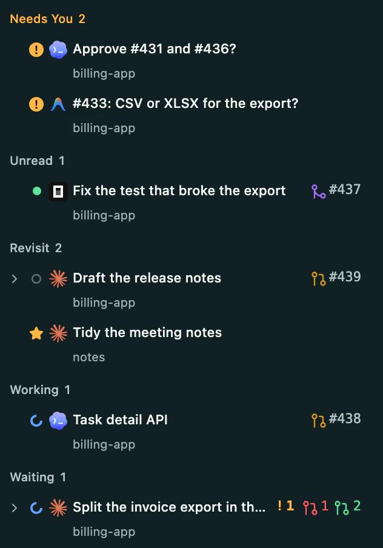
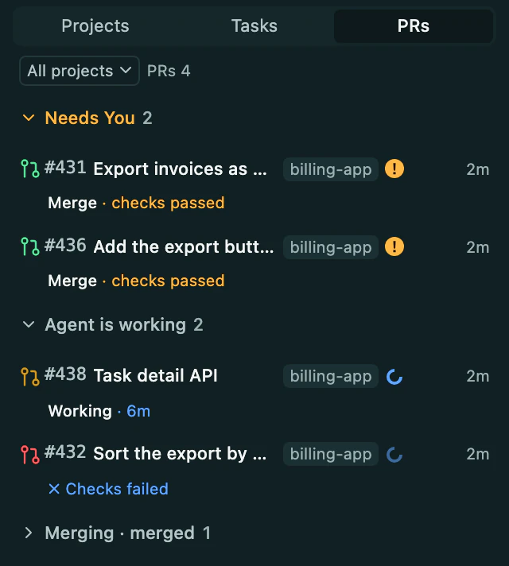
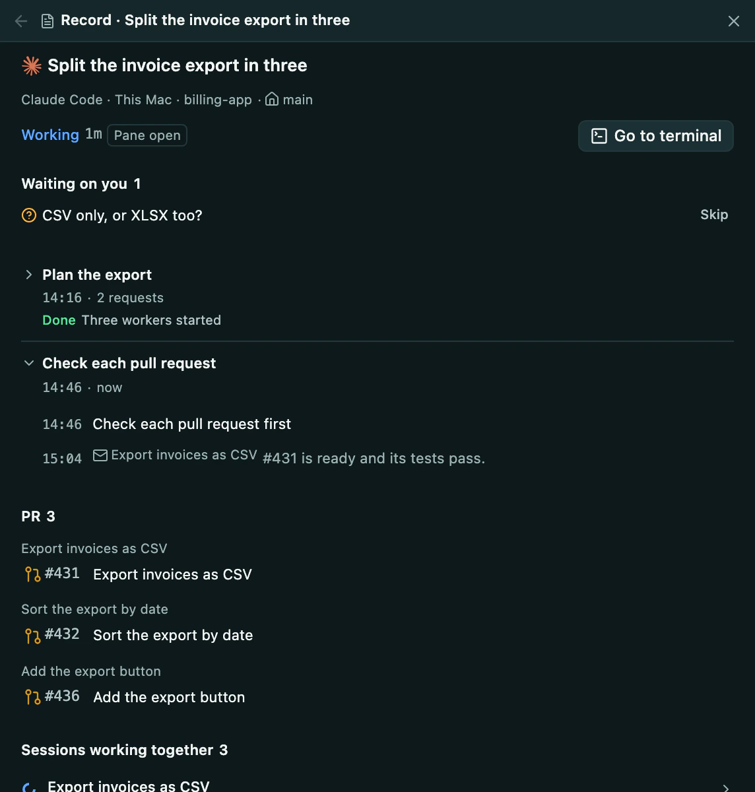
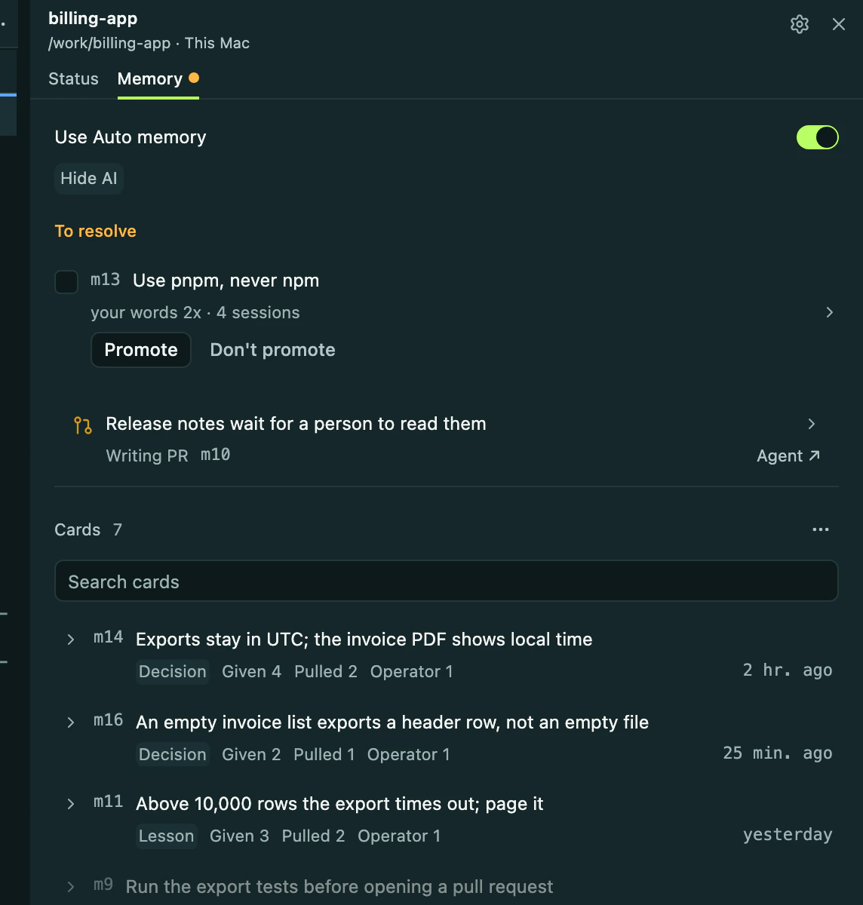
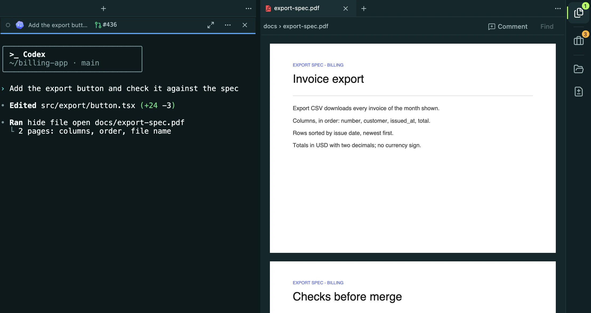
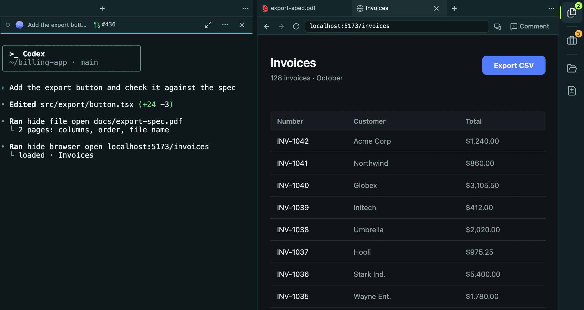
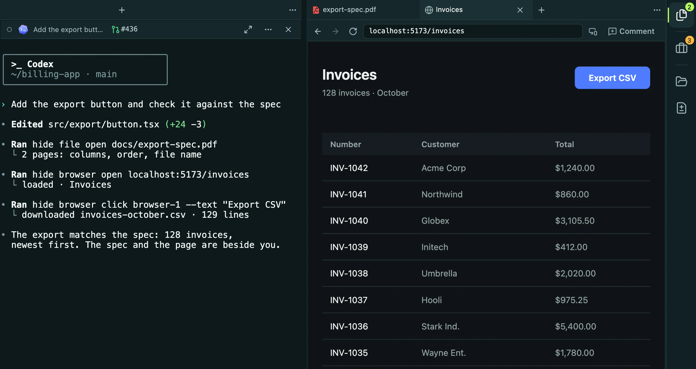

OpenCode · fix
OpenCode · fixFree
Now$0 forever · Apache 2.0
- Every agent CLI you already use
- Agents that hand work to each other
- Hide AI on the CLI you signed in to
- Every machine, and your phone
Claude Code, Codex and the rest keep running in real terminals. hide reads all of them and brings you the decisions.


Hide AI reads every agent's work and writes what you need to know: what the task is, and why it stopped. It runs on the agent CLI you already signed in to.






A lead splits the work, starts workers and gets pull requests back. Press any agent and its team and its messages light up.


Every agent runs in a real Herdr pane, started the way you start it today: your CLI, your login, your config. hide adds hooks and a skill, never a wrapper.
Already on Herdr? hide opens on your server, with your workspaces, panes and agents already in it. How it fits
Your agent opens the spec, the page it is testing and the file it changed next to its own pane, and drives the page while you watch. Its record, pull requests, memory and diffs open there too.



hide file openIt reads the spec, a PDF.hide browser openIt opens the page beside it.hide browser clickIt presses Export CSV and checks the file.
Start an agent on your laptop, a Mac mini or a Linux server. They hand work to each other across machines, the core keeps them going while the laptop sleeps, and you answer from your phone.
The app, every agent, every machine and your phone. Apache 2.0, with no hosted service and no new API key.
$0 forever · Apache 2.0

Pro comes with the Software Factory: hand off a whole issue, review the pull request. Join the list
No. hide adds its hooks to each agent's own settings and a skill the agent can call, and the vendor's CLI runs as it does without hide. Your subscription, config, skills and MCP servers stay as they are.
Claude Code, Codex, Antigravity, OpenCode, Grok, Pi and omp, each with its own login. Every one gets the same status, title and place to answer. Grok takes messages only while it works and does not use Project Memory yet.
hide is built on Herdr and opens on the server you already run, so your workspaces, panes and agents are there on first launch. It never replaces your server on its own: when yours is an older Herdr, hide offers to move it to its own, a live handoff on macOS and Linux that keeps your panes running. No Herdr yet? hide brings its own.
Not through hide, which has no hosted service. Agents, the core and Hide AI run on machines you own, with the agent CLIs you already signed in to, so code goes only where those CLIs send it. Your phone reaches your machines over your own Tailscale.

Get hide
Apple Silicon on macOS 14 or later, Windows x64, or Linux x64. Install your agent CLI and sign in before starting it from hide.
The macOS app is signed and notarized. The Windows installer and the Linux packages are unsigned: check the SHA-256 file before installing, then follow the platform's first-launch steps. hide updates itself after that.
Installation & platform notesChoose your OS and processor. Only the three setups listed here have packages.
Check the latest release.
Enable JavaScript to check downloads, or use GitHub Releases and the source-install guide below.